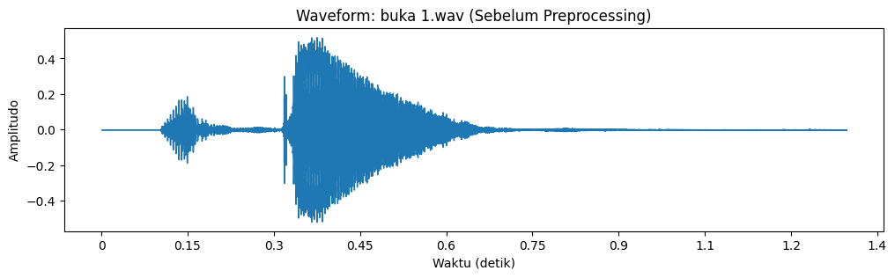
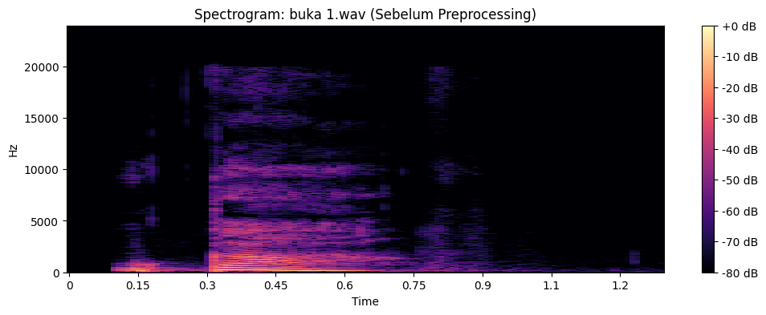
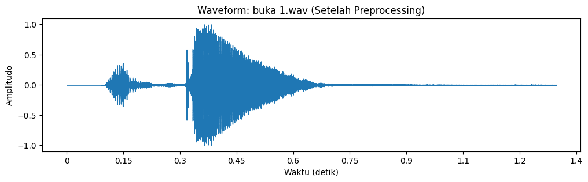
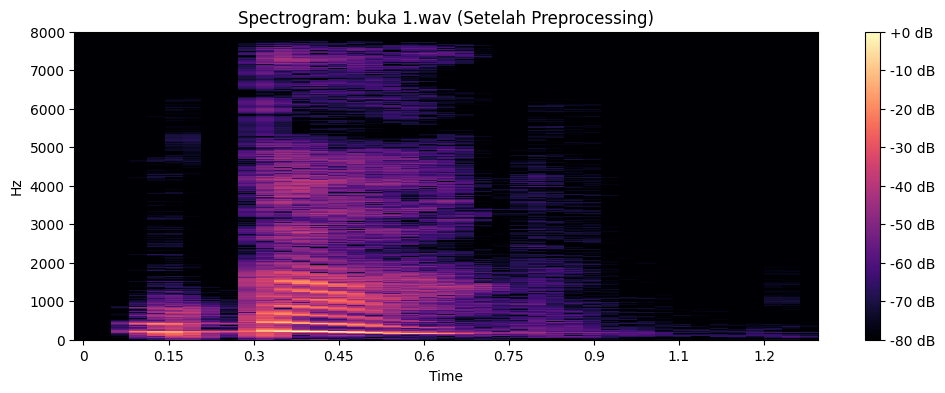
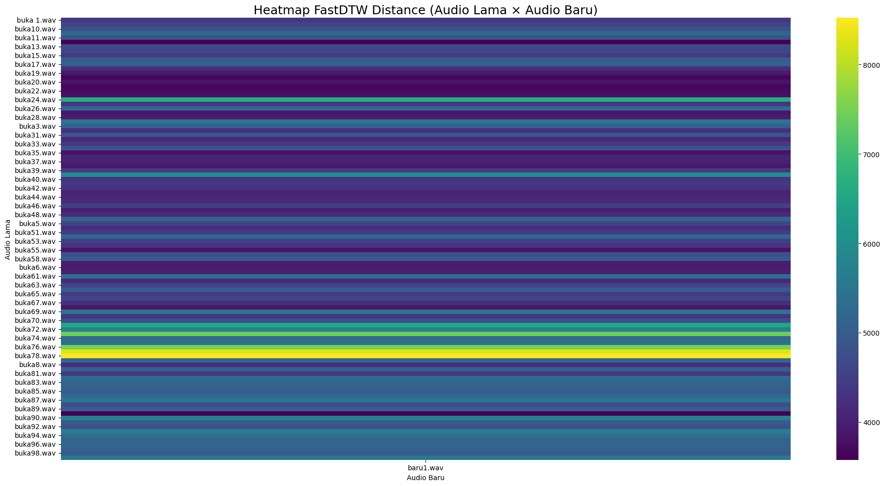

Perhitungan Jarak Dynamic Time Warping antara 100 Audio Lama (Buka/Tutup) dan 1 Audio Baru#
Tahap 1 Import Library#
import os
import numpy as np
import librosa
import librosa.display
from fastdtw import fastdtw
from scipy.spatial.distance import euclidean
import matplotlib.pyplot as plt
import pandas as pd
Tahap 2 Pengecekan Dataset Audio#
import os
# Folder dataset
folder_buka = "AudioDTW/AudioLama/"
folder_new = "AudioDTW/AudioBaru/"
# --- Fungsi untuk mendapatkan file .wav ---
def get_wav_files(folder):
if not os.path.exists(folder):
print(f" Folder tidak ditemukan: {folder}")
return []
files = [f for f in os.listdir(folder) if f.lower().endswith(".wav")]
return sorted(files)
# --- Ambil file dari tiap folder ---
buka_files = get_wav_files(folder_buka)
new_files = get_wav_files(folder_new)
# --- TAMPILKAN INFO DATASET ---
print("=== DATASET CHECK ===")
print(f"Jumlah audio 'buka' : {len(buka_files)} file")
print(f"Jumlah audio 'baru' : {len(new_files)} file")
# Tampilkan maksimal 10 contoh file baru
print("\nContoh file 'buka' :", buka_files[:5])
print("Contoh file 'baru' :", new_files[:5])
# --- Validasi dataset ---
if len(buka_files) == 0:
print("\n Error: Tidak ada audio di folder AudioLama/")
elif len(new_files) == 0:
print("\n Error: Tidak ada audio di folder AudioBaru/")
else:
print("\n Dataset siap diproses! Semua file dalam format .wav")
=== DATASET CHECK ===
Jumlah audio 'buka' : 100 file
Jumlah audio 'baru' : 1 file
Contoh file 'buka' : ['buka 1.wav', 'buka 57.wav', 'buka10.wav', 'buka100.wav', 'buka11.wav']
Contoh file 'baru' : ['baru1.wav']
Dataset siap diproses! Semua file dalam format .wav
Tahap 3 Load Audio dan Normalisasi Sample Rate ke 16 kHz#
import librosa
import os
folder_lama = "AudioDTW/AudioLama/"
folder_baru = "AudioDTW/AudioBaru/"
def load_all_audio(folder, target_sr=16000):
data = {}
sr_list = [] # untuk menyimpan sample rate asli
for f in sorted(os.listdir(folder)):
if f.lower().endswith(".wav"):
path = os.path.join(folder, f)
# Ambil sample rate asli
try:
sr_original = librosa.get_samplerate(path)
except:
sr_original = None
sr_list.append(sr_original)
# Load + paksa samakan sr
y, _ = librosa.load(path, sr=target_sr)
data[f] = y
return data, sr_list
# === LOAD DATASET ===
audio_lama, sr_lama = load_all_audio(folder_lama)
audio_baru, sr_baru = load_all_audio(folder_baru)
print("Jumlah audio lama :", len(audio_lama))
print("Jumlah audio baru :", len(audio_baru))
# === CEK APAKAH SAMPLE RATE SAMA? ===
def check_sr(sr_list, jenis):
unik = set(sr_list)
print(f"\nSample rate asli {jenis} :", unik)
if None in unik:
print(" Ada file yang gagal dibaca sample ratenya!")
if len(unik) == 1:
print(f" Semua sample rate {jenis} konsisten!")
else:
print(f" Sample rate {jenis} TIDAK sama! Harus disamakan.")
check_sr(sr_lama, "audio lama")
check_sr(sr_baru, "audio baru")
Jumlah audio lama : 100
Jumlah audio baru : 1
Sample rate asli audio lama : {48000}
Semua sample rate audio lama konsisten!
Sample rate asli audio baru : {48000}
Semua sample rate audio baru konsisten!
Tahap 4 Prepocessing#
import os
import librosa
# Folder dataset
folder_lama = "AudioDTW/AudioLama/"
folder_baru = "AudioDTW/AudioBaru/"
# Target sample rate
TARGET_SR = 16000
# Fungsi untuk load dan preprocess audio
def load_and_preprocess(folder, target_sr=TARGET_SR):
"""
Load semua file .wav dari folder, convert ke mono, normalize amplitude.
Mengembalikan dictionary {filename: audio_array} dan list sample rate asli.
"""
data = {}
sr_list = []
for f in sorted(os.listdir(folder)):
if f.lower().endswith(".wav"):
path = os.path.join(folder, f)
# Ambil sample rate asli
try:
sr_orig = librosa.get_samplerate(path)
except:
sr_orig = None
sr_list.append(sr_orig)
# Load audio, convert stereo → mono otomatis, resample ke target_sr
y, _ = librosa.load(path, sr=target_sr)
# --- Preprocessing ringan ---
# Normalize amplitude supaya volume konsisten
y = librosa.util.normalize(y)
# Simpan hasil
data[f] = y
return data, sr_list
# === Load dan preprocess semua audio lama dan baru ===
audio_lama, sr_lama = load_and_preprocess(folder_lama)
audio_baru, sr_baru = load_and_preprocess(folder_baru)
# === Info dataset setelah preprocessing ===
print(" Preprocessing selesai")
print(f"Jumlah audio lama : {len(audio_lama)}")
print(f"Jumlah audio baru : {len(audio_baru)}")
Preprocessing selesai
Jumlah audio lama : 100
Jumlah audio baru : 1
Tahap 5 Visualisasi#
# Folder dataset
folder_lama = "AudioDTW/AudioLama/"
TARGET_SR = 16000
# --- Load raw audio (sebelum preprocessing) ---
def load_raw_audio(folder):
data = {}
for f in sorted(os.listdir(folder)):
if f.lower().endswith(".wav"):
path = os.path.join(folder, f)
y, sr = librosa.load(path, sr=None) # sr=None biar tetap asli
data[f] = (y, sr)
return data
raw_audio_lama = load_raw_audio(folder_lama)
# --- Load & preprocessing audio ---
def load_and_preprocess(folder, target_sr=TARGET_SR):
data = {}
for f in sorted(os.listdir(folder)):
if f.lower().endswith(".wav"):
path = os.path.join(folder, f)
y, _ = librosa.load(path, sr=target_sr) # convert mono + resample
y = librosa.util.normalize(y) # normalize amplitude
data[f] = y
return data
audio_lama = load_and_preprocess(folder_lama)
# --- Pilih file pertama ---
first_file = list(audio_lama.keys())[0]
# --- Fungsi untuk menampilkan waveform dan spectrogram ---
def plot_audio(y, sr, title="Audio"):
plt.figure(figsize=(12,3))
librosa.display.waveshow(y, sr=sr)
plt.title(f"Waveform: {title}")
plt.xlabel("Waktu (detik)")
plt.ylabel("Amplitudo")
plt.show()
# Spectrogram
D = librosa.stft(y)
S_db = librosa.amplitude_to_db(np.abs(D), ref=np.max)
plt.figure(figsize=(12,4))
librosa.display.specshow(S_db, sr=sr, x_axis='time', y_axis='hz', cmap='magma')
plt.colorbar(format="%+2.0f dB")
plt.title(f"Spectrogram: {title}")
plt.show()
# Info
print("Durasi:", len(y)/sr, "detik")
print("Min amplitude:", y.min(), "Max amplitude:", y.max())
# --- Plot raw audio ---
y_raw, sr_raw = raw_audio_lama[first_file]
plot_audio(y_raw, sr_raw, title=f"{first_file} (Sebelum Preprocessing)")
# --- Plot preprocessed audio ---
y_proc = audio_lama[first_file]
plot_audio(y_proc, TARGET_SR, title=f"{first_file} (Setelah Preprocessing)")


Durasi: 1.296 detik
Min amplitude: -0.49389648 Max amplitude: 0.51989746


Durasi: 1.296 detik
Min amplitude: -0.9513202 Max amplitude: 1.0
Tahap 6 Perhitungan Kemiripan Audio Menggunakan MFCC dan FastDTW#
import os
import librosa
import numpy as np
import pandas as pd
from fastdtw import fastdtw
from scipy.spatial.distance import euclidean
# --- Folder & parameter ---
folder_lama = "AudioDTW/AudioLama/"
folder_baru = "AudioDTW/AudioBaru/"
TARGET_SR = 16000
n_mfcc = 13
hop_length = 512
n_fft = 2048
# --- Load & Preprocessing ---
def load_and_preprocess(folder, target_sr=TARGET_SR):
data = {}
for f in sorted(os.listdir(folder)):
if f.lower().endswith(".wav"):
path = os.path.join(folder, f)
y, _ = librosa.load(path, sr=target_sr)
y = librosa.util.normalize(y)
data[f] = y
return data
audio_lama = load_and_preprocess(folder_lama)
audio_baru = load_and_preprocess(folder_baru)
# --- Ekstraksi MFCC ---
def extract_mfcc(audio_dict, sr=TARGET_SR, n_mfcc=n_mfcc, hop_length=hop_length, n_fft=n_fft):
mfcc_dict = {}
for filename, y in audio_dict.items():
mfcc = librosa.feature.mfcc(
y=y, sr=sr, n_mfcc=n_mfcc,
hop_length=hop_length, n_fft=n_fft
)
mfcc_dict[filename] = mfcc
return mfcc_dict
mfcc_lama = extract_mfcc(audio_lama)
mfcc_baru = extract_mfcc(audio_baru)
# --- CEK UKURAN MFCC 13×T ---
print("\n=== Ukuran MFCC Audio Lama (13 × T) ===")
for f in mfcc_lama:
print(f"{f}: {mfcc_lama[f].shape}")
print("\n=== Ukuran MFCC Audio Baru (13 × T) ===")
for f in mfcc_baru:
print(f"{f}: {mfcc_baru[f].shape}")
# --- Hitung FastDTW untuk semua pasangan ---
files_lama = list(mfcc_lama.keys())
files_baru = list(mfcc_baru.keys())
distance_matrix = np.zeros((len(files_lama), len(files_baru)))
for i, f_lama in enumerate(files_lama):
X = mfcc_lama[f_lama].T
for j, f_baru in enumerate(files_baru):
Y = mfcc_baru[f_baru].T
distance, _ = fastdtw(X, Y, dist=euclidean)
distance_matrix[i, j] = distance
# --- Tampilkan dalam bentuk DataFrame ---
df = pd.DataFrame(distance_matrix, index=files_lama, columns=files_baru)
print("\n=== FastDTW Distance Table (Rapi) ===\n")
print(df.to_string())
=== Ukuran MFCC Audio Lama (13 × T) ===
buka 1.wav: (13, 41)
buka 57.wav: (13, 34)
buka10.wav: (13, 63)
buka100.wav: (13, 43)
buka11.wav: (13, 74)
buka12.wav: (13, 70)
buka13.wav: (13, 61)
buka14.wav: (13, 67)
buka15.wav: (13, 56)
buka16.wav: (13, 60)
buka17.wav: (13, 67)
buka18.wav: (13, 63)
buka19.wav: (13, 52)
buka2.wav: (13, 65)
buka20.wav: (13, 55)
buka21.wav: (13, 58)
buka22.wav: (13, 55)
buka23.wav: (13, 52)
buka24.wav: (13, 64)
buka25.wav: (13, 55)
buka26.wav: (13, 49)
buka27.wav: (13, 54)
buka28.wav: (13, 52)
buka29.wav: (13, 60)
buka3.wav: (13, 75)
buka30.wav: (13, 49)
buka31.wav: (13, 59)
buka32.wav: (13, 54)
buka33.wav: (13, 55)
buka34.wav: (13, 39)
buka35.wav: (13, 50)
buka36.wav: (13, 52)
buka37.wav: (13, 56)
buka38.wav: (13, 45)
buka39.wav: (13, 43)
buka4.wav: (13, 74)
buka40.wav: (13, 49)
buka41.wav: (13, 48)
buka42.wav: (13, 50)
buka43.wav: (13, 45)
buka44.wav: (13, 44)
buka45.wav: (13, 37)
buka46.wav: (13, 41)
buka47.wav: (13, 45)
buka48.wav: (13, 52)
buka49.wav: (13, 41)
buka5.wav: (13, 69)
buka50.wav: (13, 35)
buka51.wav: (13, 48)
buka52.wav: (13, 43)
buka53.wav: (13, 55)
buka54.wav: (13, 46)
buka55.wav: (13, 44)
buka56.wav: (13, 49)
buka58.wav: (13, 37)
buka59.wav: (13, 48)
buka6.wav: (13, 60)
buka60.wav: (13, 39)
buka61.wav: (13, 40)
buka62.wav: (13, 41)
buka63.wav: (13, 39)
buka64.wav: (13, 37)
buka65.wav: (13, 37)
buka66.wav: (13, 39)
buka67.wav: (13, 43)
buka68.wav: (13, 44)
buka69.wav: (13, 43)
buka7.wav: (13, 63)
buka70.wav: (13, 35)
buka71.wav: (13, 30)
buka72.wav: (13, 35)
buka73.wav: (13, 35)
buka74.wav: (13, 37)
buka75.wav: (13, 39)
buka76.wav: (13, 28)
buka77.wav: (13, 28)
buka78.wav: (13, 33)
buka79.wav: (13, 35)
buka8.wav: (13, 71)
buka80.wav: (13, 34)
buka81.wav: (13, 46)
buka82.wav: (13, 31)
buka83.wav: (13, 35)
buka84.wav: (13, 31)
buka85.wav: (13, 46)
buka86.wav: (13, 40)
buka87.wav: (13, 41)
buka88.wav: (13, 33)
buka89.wav: (13, 48)
buka9.wav: (13, 67)
buka90.wav: (13, 33)
buka91.wav: (13, 29)
buka92.wav: (13, 29)
buka93.wav: (13, 29)
buka94.wav: (13, 39)
buka95.wav: (13, 34)
buka96.wav: (13, 26)
buka97.wav: (13, 33)
buka98.wav: (13, 39)
buka99.wav: (13, 33)
=== Ukuran MFCC Audio Baru (13 × T) ===
baru1.wav: (13, 60)
=== FastDTW Distance Table (Rapi) ===
baru1.wav
buka 1.wav 4362.709660
buka 57.wav 4577.638368
buka10.wav 4764.123096
buka100.wav 5206.768279
buka11.wav 4841.085008
buka12.wav 3577.330609
buka13.wav 4666.335249
buka14.wav 4620.706966
buka15.wav 4392.945598
buka16.wav 5033.176446
buka17.wav 5049.940936
buka18.wav 4208.954799
buka19.wav 3924.591284
buka2.wav 3664.468699
buka20.wav 3839.894876
buka21.wav 3666.936965
buka22.wav 3722.374522
buka23.wav 3771.434325
buka24.wav 6621.631600
buka25.wav 4337.071768
buka26.wav 5187.264930
buka27.wav 3864.246991
buka28.wav 3964.630317
buka29.wav 5457.215215
buka3.wav 5090.923665
buka30.wav 4254.404911
buka31.wav 4850.939598
buka32.wav 4124.273464
buka33.wav 4426.153178
buka34.wav 4804.313413
buka35.wav 3814.108454
buka36.wav 4074.516438
buka37.wav 4040.771430
buka38.wav 3898.806742
buka39.wav 4394.466191
buka4.wav 5953.700200
buka40.wav 4328.640743
buka41.wav 4374.602432
buka42.wav 4305.999073
buka43.wav 4061.546536
buka44.wav 4082.824827
buka45.wav 4187.508765
buka46.wav 4507.253663
buka47.wav 3985.292606
buka48.wav 4171.178756
buka49.wav 5138.846637
buka5.wav 4591.707932
buka50.wav 4210.424535
buka51.wav 4441.438083
buka52.wav 5190.425232
buka53.wav 4448.565644
buka54.wav 4313.880906
buka55.wav 3831.150225
buka56.wav 4768.477737
buka58.wav 4963.801734
buka59.wav 3965.363993
buka6.wav 3981.319705
buka60.wav 4016.366102
buka61.wav 5389.327638
buka62.wav 4122.168247
buka63.wav 4599.212633
buka64.wav 4985.480879
buka65.wav 4437.703034
buka66.wav 4599.547684
buka67.wav 4228.919173
buka68.wav 3883.201187
buka69.wav 5471.721154
buka7.wav 4335.316048
buka70.wav 4736.911828
buka71.wav 6544.597889
buka72.wav 5767.510695
buka73.wav 7413.866411
buka74.wav 5237.752597
buka75.wav 5381.460749
buka76.wav 7495.450169
buka77.wav 8275.028218
buka78.wav 8522.577582
buka79.wav 5187.529342
buka8.wav 4197.516986
buka80.wav 5049.268252
buka81.wav 4396.144325
buka82.wav 5290.218383
buka83.wav 5144.972684
buka84.wav 5126.806561
buka85.wav 4982.049366
buka86.wav 5230.151118
buka87.wav 5521.091223
buka88.wav 4754.007339
buka89.wav 4982.885899
buka9.wav 3593.319786
buka90.wav 5712.245813
buka91.wav 4970.871555
buka92.wav 4837.898353
buka93.wav 5657.056355
buka94.wav 5367.857001
buka95.wav 5116.367356
buka96.wav 5173.297056
buka97.wav 5111.161167
buka98.wav 4931.854522
buka99.wav 5580.596210
Tahap 7 Ambil 5 Audio Lama Paling Mirip dengan Satu Audio Baru#
target_audio_baru = "baru1.wav" # ubah sesuai file target
top_n = 5
print(f"\n=== 5 Audio Lama Paling Mirip dengan {target_audio_baru} ===")
# Sort berdasarkan jarak terkecil
top_matches = df[target_audio_baru].sort_values().head(top_n)
print(top_matches.to_string())
=== 5 Audio Lama Paling Mirip dengan baru1.wav ===
buka12.wav 3577.330609
buka9.wav 3593.319786
buka2.wav 3664.468699
buka21.wav 3666.936965
buka22.wav 3722.374522
Tahap 8 Heatmap Visualisasi#
# ============================
# TAHAP 8 — Heatmap Visualisasi
# ============================
import seaborn as sns
import matplotlib.pyplot as plt
plt.figure(figsize=(20, 10))
sns.heatmap(df, cmap="viridis")
plt.title("Heatmap FastDTW Distance (Audio Lama × Audio Baru)", fontsize=18)
plt.xlabel("Audio Baru")
plt.ylabel("Audio Lama")
plt.tight_layout()
plt.show()

print("\n=== Debug Jumlah Audio ===")
print("File lama terbaca :", len(audio_lama))
print("File baru terbaca :", len(audio_baru))
print("\nDaftar file lama:")
for f in audio_lama.keys():
print(f)
=== Debug Jumlah Audio ===
File lama terbaca : 100
File baru terbaca : 1
Daftar file lama:
buka 1.wav
buka 57.wav
buka10.wav
buka100.wav
buka11.wav
buka12.wav
buka13.wav
buka14.wav
buka15.wav
buka16.wav
buka17.wav
buka18.wav
buka19.wav
buka2.wav
buka20.wav
buka21.wav
buka22.wav
buka23.wav
buka24.wav
buka25.wav
buka26.wav
buka27.wav
buka28.wav
buka29.wav
buka3.wav
buka30.wav
buka31.wav
buka32.wav
buka33.wav
buka34.wav
buka35.wav
buka36.wav
buka37.wav
buka38.wav
buka39.wav
buka4.wav
buka40.wav
buka41.wav
buka42.wav
buka43.wav
buka44.wav
buka45.wav
buka46.wav
buka47.wav
buka48.wav
buka49.wav
buka5.wav
buka50.wav
buka51.wav
buka52.wav
buka53.wav
buka54.wav
buka55.wav
buka56.wav
buka58.wav
buka59.wav
buka6.wav
buka60.wav
buka61.wav
buka62.wav
buka63.wav
buka64.wav
buka65.wav
buka66.wav
buka67.wav
buka68.wav
buka69.wav
buka7.wav
buka70.wav
buka71.wav
buka72.wav
buka73.wav
buka74.wav
buka75.wav
buka76.wav
buka77.wav
buka78.wav
buka79.wav
buka8.wav
buka80.wav
buka81.wav
buka82.wav
buka83.wav
buka84.wav
buka85.wav
buka86.wav
buka87.wav
buka88.wav
buka89.wav
buka9.wav
buka90.wav
buka91.wav
buka92.wav
buka93.wav
buka94.wav
buka95.wav
buka96.wav
buka97.wav
buka98.wav
buka99.wav